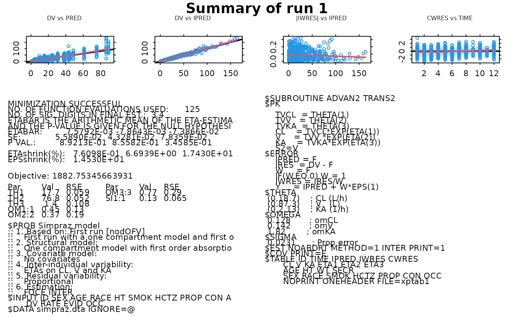

Function to build Xpose run summaries.
Usage
runsum(
object,
dir = "",
modfile = paste(dir, "run", object@Runno, ".mod", sep = ""),
listfile = paste(dir, "run", object@Runno, ".lst", sep = ""),
main = NULL,
subset = xsubset(object),
show.plots = TRUE,
txt.cex = 0.7,
txt.font = 1,
show.ids = FALSE,
param.table = TRUE,
txt.columns = 2,
force.wres = FALSE,
...
)Arguments
- object
An xpose.data object.
- dir
The directory to look for the model and output file of a NONMEM run.
- modfile
The name of the NONMEM control stream associated with the current run.
- listfile
The name of the NONMEM output file associated with the current run.
- main
A string giving the main heading.
NULLif none.- subset
A string giving the subset expression to be applied to the data before plotting. See
xsubset.- show.plots
Logical indicating if GOF plots should be shown in the run summary.
- txt.cex
Number indicating the size of the txt in the run summary.
- txt.font
Font of the text in the run summary.
- show.ids
Logical indicating if IDs should be plotted in the plots for the run summary.
- param.table
Logical indicating if the parameter table should be shown in the run summary.
- txt.columns
The number of text columns in the run summary.
- force.wres
Plot the WRES even if other residuals are available.
- ...
Other arguments passed to the various functions.
See also
Other specific functions:
absval.cwres.vs.cov.bw(),
absval.cwres.vs.pred(),
absval.cwres.vs.pred.by.cov(),
absval.iwres.cwres.vs.ipred.pred(),
absval.iwres.vs.cov.bw(),
absval.iwres.vs.idv(),
absval.iwres.vs.ipred(),
absval.iwres.vs.ipred.by.cov(),
absval.iwres.vs.pred(),
absval.wres.vs.cov.bw(),
absval.wres.vs.idv(),
absval.wres.vs.pred(),
absval.wres.vs.pred.by.cov(),
absval_delta_vs_cov_model_comp,
addit.gof(),
autocorr.cwres(),
autocorr.iwres(),
autocorr.wres(),
basic.gof(),
basic.model.comp(),
cat.dv.vs.idv.sb(),
cat.pc(),
cov.splom(),
cwres.dist.hist(),
cwres.dist.qq(),
cwres.vs.cov(),
cwres.vs.idv(),
cwres.vs.idv.bw(),
cwres.vs.pred(),
cwres.vs.pred.bw(),
cwres.wres.vs.idv(),
cwres.wres.vs.pred(),
dOFV.vs.cov(),
dOFV.vs.id(),
dOFV1.vs.dOFV2(),
data.checkout(),
dv.preds.vs.idv(),
dv.vs.idv(),
dv.vs.ipred(),
dv.vs.ipred.by.cov(),
dv.vs.ipred.by.idv(),
dv.vs.pred(),
dv.vs.pred.by.cov(),
dv.vs.pred.by.idv(),
dv.vs.pred.ipred(),
gof(),
ind.plots(),
ind.plots.cwres.hist(),
ind.plots.cwres.qq(),
ipred.vs.idv(),
iwres.dist.hist(),
iwres.dist.qq(),
iwres.vs.idv(),
kaplan.plot(),
par_cov_hist,
par_cov_qq,
parm.vs.cov(),
parm.vs.parm(),
pred.vs.idv(),
ranpar.vs.cov(),
wres.dist.hist(),
wres.dist.qq(),
wres.vs.idv(),
wres.vs.idv.bw(),
wres.vs.pred(),
wres.vs.pred.bw(),
xpose.VPC(),
xpose.VPC.both(),
xpose.VPC.categorical(),
xpose4-package
Examples
od = setwd(tempdir()) # move to a temp directory
(cur.files <- dir()) # current files in temp directory
#> [1] "bslib-1ee912de293daf57e3d290381475f8e1"
#> [2] "downlit"
#> [3] "file1cb11e5d7fcb"
simprazExample(overwrite=TRUE) # write files
(new.files <- dir()[!(dir() %in% cur.files)]) # what files are new here?
#> [1] "run1.ext" "run1.lst" "run1.mod" "simpraz.dta" "xptab1"
xpdb <- xpose.data(1)
#>
#> Looking for NONMEM table files.
#> Reading ./xptab1
#> Table files read.
#>
#> Looking for NONMEM simulation table files.
#> No simulated table files read.
#>
runsum(xpdb)

file.remove(new.files) # remove these files
#> [1] TRUE TRUE TRUE TRUE TRUE
setwd(od) # restore working directory